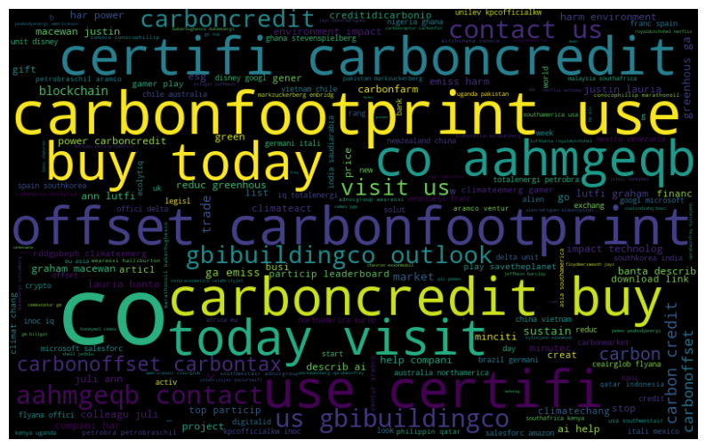
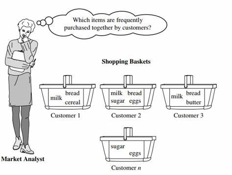
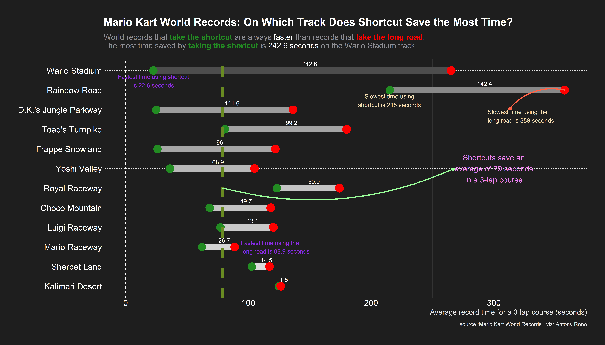
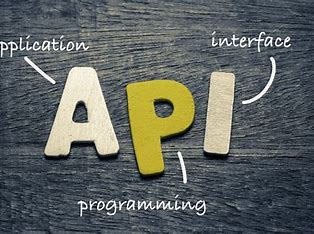

My Projects
Carbon Credits Market Sentiments
A project to understand the overall perception of carbon credits in the market, using data from twitter.
- Sentiment Analysis
- Python


Carbon Projects Scraping
A project to scrape carbon projects from different carbon registries.
- R
- Web Scraping
- Functional Porgramming
Market Basket Analysis
A project to determine the supermarket items that are frequently bought together
- Association Rule Learning
- R
- Rmarkdown

R Data Visualization
Different R data visualization through weekly #TidyTuesday challenges, transforming diverse datasets into compelling visual narratives.
- R
- Ggplot2
- Tidyverse

KOBO Toolbox API Toolkit
A project to develop functions to programmatically access and update data in KOBO Toolbox.
- R
- KOBO Collect
- APIs

About Me
Key Strengths:
- Data Science Expertise: Proficient in leveraging advanced analytics and machine learning techniques to extract actionable insights. Adept at translating complex data into clear, concise narratives.
- Technological Proficiency: Skilled in R, Python (for data science), SQL, PowerBI, and Excel, harnessing the power of these tools to unlock the potential of data.
- Problem Solver: Passionate about solving real-world challenges through the application of data science methodologies. Proven track record in developing innovative solutions that enhance business performance.
- Leadership and Collaboration: Successful track record as a Data & Analytics Manager for the past two years, leading cross-functional teams and fostering a collaborative data-driven culture.